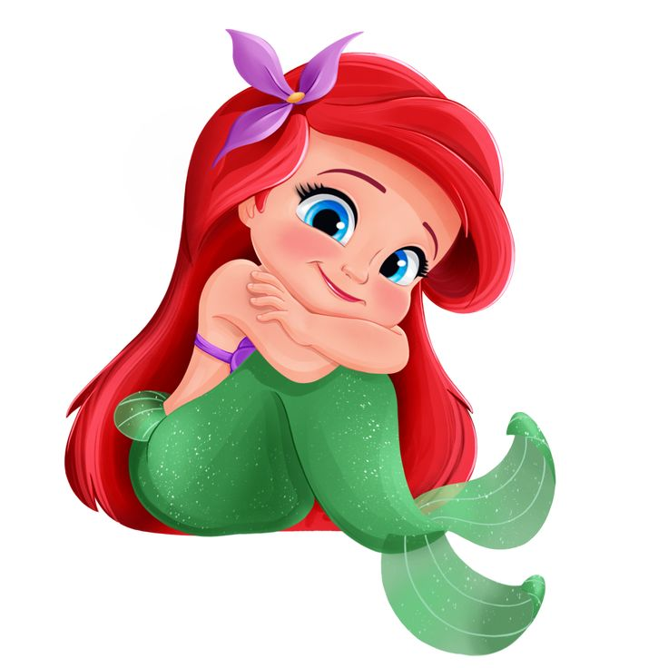

Nuestra historia ❤️
Alexandra
Tú tan bella y tan delicada, mi Pan de Dios,
yo tan loco por tus ojos y ese brillo veloz.
Me marcaste para siempre como un tattoo,
solo quiero una rutina si estás tú.
yo tan loco por tus ojos y ese brillo veloz.
Me marcaste para siempre como un tattoo,
solo quiero una rutina si estás tú.
"Tú y yo somos como el ying y el yang,
Mary Jane y Spider-Man.
No se me ocurre mejor plan,
que tú y yo, una casa frente al mar."
Mary Jane y Spider-Man.
No se me ocurre mejor plan,
que tú y yo, una casa frente al mar."
Sé que eres un poco desconfiada, lo sé bien,
pero en tu cabello y tu risa me siento al cien.
Eres la musa de este jugador, mi show favorito,
amarte a ti, Alexandra, es mi plan más bonito.
pero en tu cabello y tu risa me siento al cien.
Eres la musa de este jugador, mi show favorito,
amarte a ti, Alexandra, es mi plan más bonito.